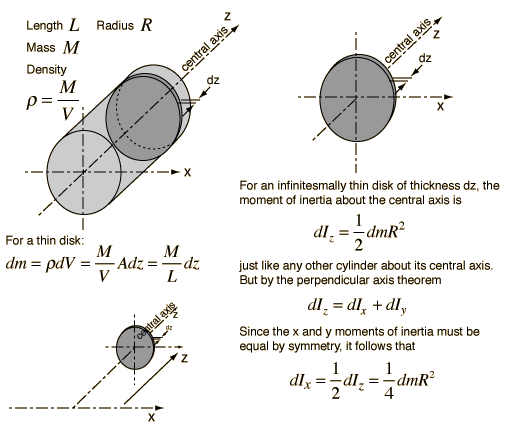
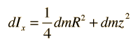
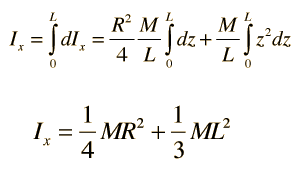

Moment of Inertia: Cylinder About Perpendicular Axis
The development of the expression for the moment of inertia of a cylinder about a diameter at its end (the x-axis in the diagram) makes use of both the parallel axis theorem and the perpendicular axis theorem. The approach involves finding an expression for a thin disk at distance z from the axis and summing over all such disks.

Obtaining the moment of inertia of the full cylinder about a diameter at its end involves summing over an infinite number of thin disks at different distances from that axis. This involves an integral from z=0 to z=L. For any given disk at distance z from the x axis, using the parallel axis theorem gives the moment of inertia about the x axis.

Now expressing the mass element dm in terms of z, we can integrate over the length of the cylinder.

This form can be seen to be plausible it you note that it is the sum of the expressions for a thin disk about a diameter plus the expression for a thin rod about its end. If you take the limiting case of R=0 you get the thin rod expression, and if you take the case where L=0 you get the thin disk expression.
The last steps make use of the polynomial forms of integrals.
|